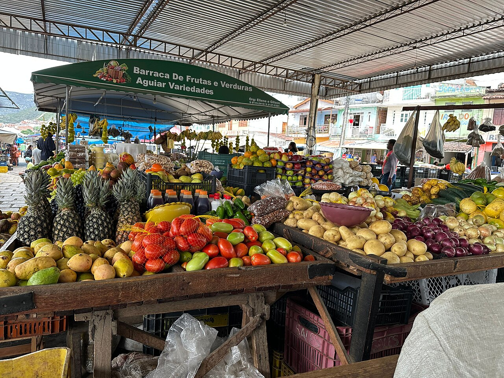

Navegue na página: acesse a apresentação da feira ou veja a lista de nossos produtos.
Apresentação da Feira
A AgroFeira é o ponto de encontro dos agricultores familiares da região de Paragominas, oferecendo produtos frescos e cultivados localmente com sustentabilidade e qualidade.

Produtos da Feira
- Mandioca — saca de 60 kg
- Banana-prata — cacho
- Açaí — rasa
- Pimenta-do-reino — quilo
- Cupuaçu — quilo
- Alface — maço